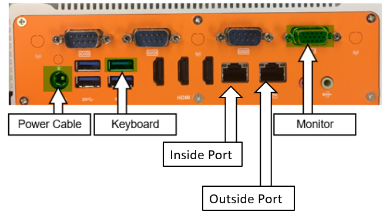
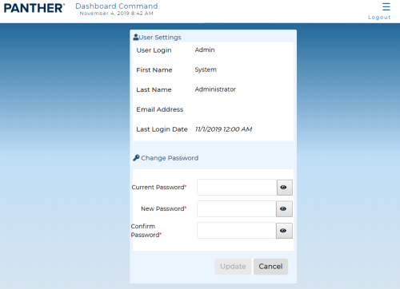
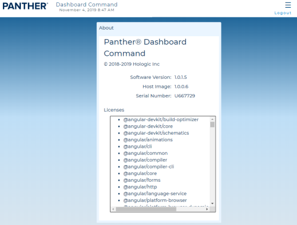
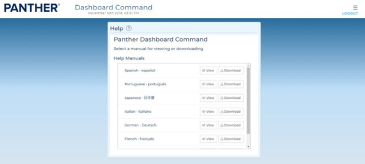

Dashboard Procedures
The Dashboard displays Panther System information on a 4K TV or web client device such as a tablet or a laptop.
 Dashboard Install Procedures
Dashboard Install Procedures
There are two methods to access the Dashboard webpage.

Set the FSE's Computer in Control Panel to the following IP address:
Static IP: 10.8.8.9
Subnet Mask: 255.255.255.0

- Connect computer to Inside Port via ethernet cable.
- On a supported web browser (on a computer use Chrome, on an iPad us Safari), navigate to https://10.8.8.8.
- On the customer's network, open a supported web browser.
- Type in the Dashboard IP address in the web address bar of the browser.
You may need to add "https://" before the IP address.
The browser doesn't always automatically do this, particularly on first access.Note: The Dashboard Server IP address is set during Firewall Configuration.
Open a supported web browser.
Click the login button at the top right corner of the homepage or in the bottom right corner of the menu page.
Login with the following credentials:
Username: admin
Password: passw0rdYou will be prompted to change the password. Input a password which meets the default complexity requirement.
Note: Write down the new password that you set.
This account is the customer's alternative Administrator credential, and the password cannot be reset to the default password.
Using the Time Zone/Date and Time procedure found on the Dashboard Administration page, set the proper time zone. The server will reboot.
Using the same procedure, set the proper local time. The server will reboot.
- Click the Logout button in the top right of the Dashboard homepage.
- Click the Logout button in the lower right of the menu pane.
- Log in to the Dashboard Server as an administrator or FSE.
- Navigate to the Administration page using the side bar menu.
- Perform a backup if not already performed.
- Select Upload Application in the Update Application Tile.
Note: The FSE login step is used to verify Dashboard Server timezone and time are set correctly.
FSEs can use any admin level account.
The FSE login option allows any FSE to walk up to another other properly setup Lab Automation Dashboard Server and log in.
- Open a supported web browser. (On a computer, use Chrome. On an iPad, use Safari)
- Click the login button in the top right corner of the homepage or in the bottom right corner of the menu page
- Click on the Switch to Service Login in the bottom right corner of the Dashboard Login page.
Using Time-Based One-Time (TOTP) Authentication, enter your username and designated 6-digit password.
Refer to TB-01603 - Using Time-Based One-Time (TOTP) Authentication.Note: The password works on two things:
1) An algorithm which both Dashboard and the FSEs Authenticator app both know.
2) The current UTC time.
If the time does not align (+/- 2 min) between the Dashboard Server and the Authenticator's time, Dashboard will expect a different 6-digit password and not allow an FSE to log in.
If this is the case, use the following two procedures to adjust the time.- Click the Login button.
- Log in to the Panther Main as an Administrator.
- Navigate to Tasks > Perform Maintenance.
- Click the Service button.
- Click the Next button until you find the Panther Link Features button.
- Click the Panther Link Features button.
- A pop-up window will appear.
- Select the Enable LAS Dashboard checkbox.
- Click Save.
Note: If the Panther Requires a restart, restart the PC as instructed.
- Log in to the Panther Main as an Administrator on the Panther.
- Ensure the LAS Dashboard feature is Enabled.
- Navigate to Admin.
- Click the Next button until you find the Manage Remote Data Access.
- Click the Manage Remote Data Access button.
- Click the Generate button.
- A Generate Access pop-up will appear with a text box for Owner.
Note: WRITE THIS OWNER DOWN
The owner will be inputted when adding the instrument to the Dashboard Server.- Click the OK button.
- A pop-up window will appear with a unique, randomly generated access key to populate within the Dashboard Server.
IMPORTANT—WRITE THIS KEY DOWN OR TAKE A PICTURE of THIS KEY
This key will not be remembered by the system and will be lost after the window is closed.- Log in to the Dashboard Server as an FSE.
- Select the Menu button in the top right of the Dashboard.
- Select Administration.
- Select the Paw icon for Instruments.
- Select Add Instrument on the Instrument Management Page.
- A pop-up window labeled Add Instrument will appear.
- Add the IP Address of the Panther that you generated the unique key from Step 9.
This IP address is the address provided in the Instructions.txt file from the Firewall Wizard. It will be the PAT address for Dashboard to communicate with the Panther.- Add the Dashboard Port number generated from the output.
The Port Number is also provided in the Instructions.txt file from the Firewall Wizard.- Populate the Alias Name with a generic name for the Panther you wish to add (20 character limit).
- This can be any name the customer may want to use to name their instrument.
e.g. Bubbles or 2090002345- Populate the Alias Short Name with a generic name for the Panther you wish to add (5 character limit).
- This Alias will be used in the card view layout.
e.g. Bub or 2345- Populate the Access Owner that you wrote into the Panther during the access key generation procedure.
- Populate the Generated Access Key with the key generated from the Panther during the access key generation procedure.
- Click the Add button.
The Dashboard server will sit within a DMZ on the Hologic Network.
The IP address, Subnet Mask, Default Gateway, and DNS servers can be found in the Instructions.txt file provided by the Firewall Wizard.
- Select the Plug icon for Network.
- Enter a Hostname chosen by the FSE.
Note: We suggest using an acronym of the Customer Site Name.
E.g. Customer Site Name: Rancho Human Society, Host Name: RHS- Select the Use the Following IP Address radio button.
- Populate the IP Address provided from the instructions.txt file from the Firewall Wizard.
Note—This IP Address is the internal IP Address for the Hologic Network DMZ. Generally, the IP Address will start with 172.15.1.100. - Populate the Subnet Mask provided from the instructions.txt file from the Firewall Wizard.
Note—This Subnet Mask Address is the internal Subnet Address for the Hologic Network DMZ. Generally, the Subnet will be 255.255.255.0. - Populate the Default Gateway provided from the instructions.txt from the Firewall Wizard.
Note—This Default Gateway is the internal gateway for the Hologic Network DMS. Generally, the default Gateway will be 172.15.1.1.
- Populate the DNS Server addresses from the Site Assessment Form.
- If specific DNS addresses are provided, select the use the following DNS server addresses button and input the addresses below.
- If the Dashboard is to obtain its own DNS servers automatically, select the Obtain DNS server address automatically.
- Click the Save button when the configuration is complete.
- Select the Work Cell tab.
- Click Add Work Cell.
- A popup window will appear.
- Populate the name of the Work Cell you wish to create.
- Click the Add button.
- You will see the newly created Work Cell appear in the list below.
- Select the Work Cell tab.
- Select the Pencil icon next to the Work Cell you wish to edit.
- Edit the name of the Work Cell in the popup window.
- Select Save.
- After the Panther has been linked to the Dashboard and a Work Cell has been created, Navigate to the Instrument > Instrument List page.
- Select the Pencil icon next to the Panther you wish to add to the Work Cell.
- Select the Work Cell drop-down menu and select the Work in which you wish to add the Panther to.
- Click the Save button.
- From the Home Page, click on the Pencil icon next to the Work Cell you would like to configure from the Dashboard Home page.
- Select the Check boxes of Panthers you would like to have on the selected Work Cell.
- Click the Apply button.
- Click the Save button.
- Login to the Dashboard as an FSE.
- From the Panther Dashboard >> Administration, select the Multiple Gears icon or System tab.
- Select the Request Backup button within the Backup Tile.
- A notification will appear demonstrating the backup was requested successfully in the upper right corner.
- The Backup Tile will indicate that a backup is being generated with a circling progress icon.
- The web browser will display that the Backup is completed when finished.
- Save the backup file to a USB flash drive.
- Log in to the Dashboard as an FSE.
- Select the Multiple Gears icon or the System tab.
- Select the Restore Backup button within the Backup Tile.

Dashboard Service Procedures
The My Account screen displays user settings and allows the user to change their password.
To access the My Account screen, select My Account from the Navigation Menu.

The About screen displays software, host image, serial number, and license attribution information for Dashboard Command.
To access the About screen, select About from the Navigation Menu.

The Help screen allows users to view or download the Panther Link- Dashboard Command and Data Sharing Application Sheet.
To access the Help screen, select Help from the Navigation Menu.Select View to open the Panther Link- Dashboard Command and Data Sharing Application Sheet or select Download to save it in the preferred language.

 button at the top of the page to send feedback, comments, or change requests.
button at the top of the page to send feedback, comments, or change requests.